화공기사(구)(구) (2004-05-23 기출문제)
1과목: 화공열역학
1. 다음 내연기관 cycle 중 같은 여건에서 그 열역학적 효율이 가장 큰 것은?
- Carnot cycle
- otto cycle
- Diesel cycle
- Sabathe cycle
(정답률: 알수없음)

2. 다음 중 평형(Equilibrium)에 대한 설명으로 적절하지 않은 것은?
- 평형은 변화가 전혀 없는 상태이다.
- 평형을 이루는데 필요한 독립변수의 수는 깁스 상률(Gibbs Phase Rule)에 의하여 구할 수 있다.
- 기-액 상평형에서 단일 성분일 경우에는 온도가 결정되면 압력은 자동으로 결정이 된다.
- 여러 개의 상이 평형을 이룰 때 각 상의 화학퍼텐셜은 모두 같다.
(정답률: 알수없음)
3. 이상기체가 일정온도에서 가역적으로 팽창할 경우 Helmholtz자유에너지(A)와 Gibbs자유에너지(G)의 변화에 관하여 다음 중 옳은 것은?
- dA > dG
- dA < dG
- dA = -dG
- dA = dG
(정답률: 90%)
4. 화학반응이 일어날 수 있는 조건은 다음 중 어느 것인가?
- Δ G° 가 커다란 부(-)의 값을 가질 때
- Δ H° 가 커다란 부(-)의 값을 가질 때
- Δ S° 가 커다란 부(-)의 값을 가질 때
- Δ U° 가 커다란 부(-)의 값을 가질 때
(정답률: 알수없음)
5. P-H선도에서 등엔트로피선의 경사(Slope)에 해당하는 식은?
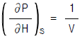
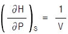
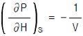
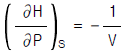
(정답률: 알수없음)
6. 비리얼 방정식(virial equation),Z = 1 + B'P로 표시할 수 있는 기체를 등온, 가역과정으로 압력 P1으로 부터 P2까지 변화시킬 때 필요한 일의 량을 바르게 나타낸 식은?
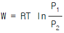
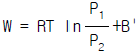
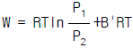
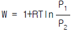
(정답률: 알수없음)
7. 압축인자(compressibility factor)인 Z를 표현하는 비리알 전개(Virial expansion)는 다음과 같다.
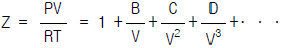
(여기에서 B,C,D 등은 비리알계수 들이다.) 이에 관한 다음 설명 중 옳지 않은 것은?- 비리알 계수들은 실제기체의 분자상호간의 작용 때문에 나타나는 것이다.
- 비리알 계수들은 주어진 기체에서 온도 및 압력에 관계 없이 일정한 값을 나타낸다.
- 이상기체의 경우 압축인자의 값은 항상 1 이다.
 항은
항은  항에 비해 언제나 값이 크다.
항에 비해 언제나 값이 크다.
(정답률: 알수없음)
8. 50kg의 강철주물(비열 0.12kcal/kg℃)이 600℃로 가열되었다. 이것을 25℃의 기름(비열 0.6kcal/kg℃) 200kg중에집어넣었다. 주위와 온도는 단열되었으며, 주물의 최종온도는 52.4℃였다. 전체 엔트로피 변화는 얼마인가?
- 4.63kcal/K
- 5.92kcal/K
- 10.56kcal/K
- 16.48kcal/K
(정답률: 알수없음)
9. 액화공정에 대한 설명 중 틀린 것은?
- 일정 압력 하에서 열교환에 의해 기체는 액화될 수 있다.
- 등엔탈피 팽창을 하는 조름공정(throttling process)에 의하여 기체를 액화시킬 수 있다.
- 기체는 터빈에서 등엔트로피 압축에 의하여 액화 된다.
- Linde공정과 Claude공정이 대표적인 액화공정이다.
(정답률: 알수없음)
10. 상태 1(P1V1)에서 상태 2(P2V2)로 변화하는데 두가지 경로를 거쳐 변화할 수 있다.
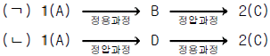
이 때 두 경로로 변하였을 때의 엔탈피(Δ H)변화는?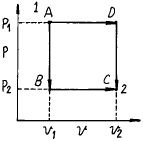
- [Δ H](ㄱ) = 2[Δ H](ㄴ)
- [Δ H](ㄴ) = 2[Δ H](ㄱ)
- [Δ H](ㄴ) = 3[Δ H](ㄱ)
- [Δ H](ㄴ) = [Δ H](ㄱ)
(정답률: 알수없음)
11. 가역단열과정(Reversible adiabatic process)의 특징을 옳게 표현한 것은? (단, H=엔탈피, G=깁스 자유에너지, U=내부에너지, S=엔트로피 이다)
- dH = 0
- dG = 0
- dU = 0
- dS = 0
(정답률: 알수없음)
12. van der Waals식으로 맞는 것은?
- (P + a/V2)(V + b) = RT
- (P - a/V2)(V + b) = RT
- (P + a/V2)(V - b) = RT
- (P - a/V2)(V - b) = RT
(정답률: 알수없음)
13. 다음의 방정식 중 틀린 것은?(단, 여기서 H : 엔탈피, Q : 열량, P : 압력, V : 부피, F : 자유에너지, S : 엔트로피, W : 일이다.)
- H = Q - PV
- F = H - TS
- S = ∫ dQ/T
- W = ∫ PdV
(정답률: 알수없음)
14. 역행응축(retrograde condensation) 현상을 가장 유용하게 쓸 수 있는 경우는?
- 천연가스 채굴시 동력없이 많은 양의 액화 천연가스를 얻는다.
- 기체를 임계점에서 응축시켜 순수성분을 분리시킨다.
- 고체 혼합물을 기체화 시킨후 다시 응축시켜 비휘발성 물질만을 얻는다.
- 냉동의 효율을 높이고 냉동제의 증발잠열을 최대로 이용한다.
(정답률: 알수없음)
15. 공기 1kg이 온도가 300K에서 500K로 증가하고, 압력이 400kPa에서 200kPa로 감소하였을 때 엔트로피의 변화는? (단, 공기의 정압비열은 1.0035kJ/kgK, 가스상수 R은 0.287kJ/kgK이다.)
- 0.4115kJ/K
- 0.5115kJ/K
- 0.6115kJ/K
- 0.7115kJ/K
(정답률: 알수없음)
16. Diesel-cycle의 P-V도표는?
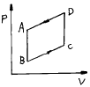
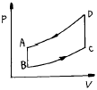
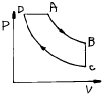
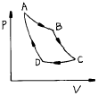
(정답률: 알수없음)
17. 가역과정과 관계되는 것은 어느 것인가?
- 마찰
- 유한한 온도간격을 거쳐 일어나는 열이동
- 모든 요소를 각기 원상태로 완전히 돌려 보낼수 있다
- 낮은 압력에 대하여 제어(制禦)없이 일어나는 팽창
(정답률: 알수없음)
18. 다음 초임계유체(Super critical fluid) 영역에 관한 특징 중 올바르지 않은 것은?
- 초임계유체 영역에서는 가열해도 온도는 증가하지 않는다.
- 초임계유체 영역에서는 액상이 존재하지 않는다.
- 초임계유체 영역에서는 액체와 증기사이의 계면이 없다.
- 초임계유체 영역에서는 액체의 밀도와 증기의 밀도가 같아 진다.
(정답률: 알수없음)
19. 과잉깁스에너지(G )와 과잉엔탈피(H) 및 과잉엔트로피(S)의 부호에 대한 설명중 맞는 것은?
- H > 0 이고 S < 0 이면 G < 0 이다.
- H < 0 이고 S > 0 이면 G > 0 이다.
- H < 0 이고 S > 0 이면 G < 0 이다.
- H > 0 이고 S > 0 이면 G > 0 이다.
(정답률: 알수없음)
20. Cp=25kJ/molK인 이상기체가 잘 단열된 긴 모세관 안을 기계적인 일의 변화없이 흐르고 있다. 이 때 들어가는 기체는 300K, 2bar이고 나갈 때의 압력은 1 bar라고 할 때 나가는 기체의 온도는?
- 150K
- 200K
- 300K
- 600K
(정답률: 70%)
2과목: 화학공업양론
21. 정상상태로 흐르는 어떤 유체의 유로가 갑자기 확대되었을 때의 변화가 아닌 것은?
- 유량
- 유속
- 압력
- 유동단면적
(정답률: 10%)
22. 메탄이 수증기와 반응하여 일산화탄소와 수소가 정상적으로 생성된다. 반응물(25몰 %메탄)의 몰유속은 20mol/hr이고, 수소의 생성속도가 6mol/hr일 때 미반응 메탄이 배출되는 몰유속(mol/hr)은? (단, 메탄의 소비속도는 2mol/hr이다.)
- 3
- 5
- 7
- 9
(정답률: 알수없음)
23. 물질의 상이 바뀔 때 흡수하거나 방출하는 열을 무엇이라고 하는가?
- 잠열
- 현열
- 반응열
- 흡수열
(정답률: 알수없음)
24. Kay의 규칙에 대한 설명 중 틀린 것은?
- 의임계변수는 각성분의 몰조성과 무관하다.
- 의임계변수를 이용하여 실제기체 특성을 결정한다.
- 환산조건을 이용하여 평균압축계수를 결정한다.
- 실제기체 혼합물의 특성을 추산하는 규칙이다.
(정답률: 알수없음)
25. 비이커에 0.175M H2SO4 용액 35ml가 들어 있다. 이 화상과 완전히 반응하는데 0.25M NaOH 용액 몇 ml이 필요한가?
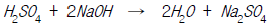
- 29ml
- 39ml
- 49ml
- 59ml
(정답률: 알수없음)
26. 농도가 5.0%인 소금수용액 1kg을 1.0%인 소금수용액으로 희석하여 3.0%인 수용액을 만들고자 할 때 필요한 1.0% 수용액의 질량[kg]은 얼마인가?
- 1.0
- 1.2
- 1.4
- 1.6
(정답률: 알수없음)
27. 1wt% NaCl의 용액을 농도가 5wt% NaCl용액이 될 때까지 증발시켰다. 원용액의 물 중 몇 wt% 의 물이 증발하였는가?
- 20.8
- 78.2
- 80.8
- 92.4
(정답률: 0%)
28. 이상기체에서 정압열용량(CP)과 정용열용량(Cv)의 관계중 맞는 것은? (단, R은 기체상수이다.)
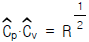
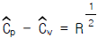
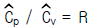
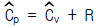
(정답률: 알수없음)
29. 실제기체의 Compressibility factor를 나타내는 그림이다 이들 기체 중에서 분자간 인력이 가장 큰 기체는?
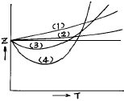
- (1)
- (2)
- (3)
- (4)
(정답률: 알수없음)
30. 그림과 같은 순환조작에서 A,B,C,D,E의 각 흐름의 조성 관계는?
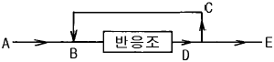
- A = B = C
- C = D = E
- A = B = D
- A = B = E
(정답률: 알수없음)
31. 정상상태의 설명 중 맞는 것은?
- 계를 지배하는 변수들이 시간변화에 무관 할 때의 상태이다.
- 계를 지배하는 변수들이 위치변화에 무관 할 때의 상태이다.
- 가역변화시에만 도달할 수 있는 상태이다.
- 소멸항이 있으면 항상 도달할 수 없는 상태이다.
(정답률: 알수없음)
32. 프로판(C3H8) 132㎏을 연소하여 얻어지는 CO2의 양은 얼마인가?
- 196㎏
- 296㎏
- 396㎏
- 496㎏
(정답률: 알수없음)
33. 25℃의 물 30㎏, 0℃의 얼음 15kg, 140℃, 15psia수증기 15kg 을 완전히 단열된 회분식 공정을 통해서 혼합했을 때, 최종온도를 계산하기 위한 에너지 수지식으로 알맞는 것은?(단, 첨자 s는 수증기, w는 물, f는 최종혼합물, t1은 초기온도, t2은 최종온도를 나타낸다.)
- 60Wft2 = 15Wst1 - 30Wwt1 - 15Wit1
- 60Wft1 = 30Wst2 - 15Wit2 - 15Wwt2
- 15Wft2 - (30Wst1 - 15Wit1) = 0
- 60Wft2 - (30Wst1 + 15Wit1 + 15Wwt1) = 0
(정답률: 알수없음)
34. 물의 삼중점에 대한 설명중 틀린 것은?
- 세 상이 상평형을 이루는 유일한 조건이다.
- 세 상의 평형은 각기 압력과 온도고정으로 유지된다.
- 세 상의 평형은 압력 또는 온도고정으로 유지된다.
- 세 상의 평형은 시강변수의 독립고정으로 유지된다.
(정답률: 알수없음)
35. N2O4는 다음과 같이 해리 한다. N2O4
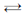
2NO2 만약 500mL의 플라스크에 4.0g의 N2O4를 넣고 50℃에서 해리시켜 평형에 도달하였을 때 전압이 3.63atm이었다. 이 때 해리도(α )는 얼마인가?- 약 27.5%
- 약 37.5%
- 약 47.5%
- 약 57.5%
(정답률: 알수없음)
36. 반응열의 계산을 Δ
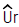
(T) = Δ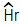
(T)-Δ nRT로 쓸 수 있는 조건이 아닌 것은?(단, Ｕ:내부에너지, Ｈ:엔탈피, Ｒ:기체상수, Ｔ:온도)- 반응이 정압상태에서 진행할 때
- 이상기체 특성을 가질 때
- 고체, 액체의 비체적은 기체에 비해 무시
- Δ
 (T)는 Uproducts - Ureactants로 한정반응에서 사용
(T)는 Uproducts - Ureactants로 한정반응에서 사용
(정답률: 알수없음)
37. 다음 중 SI기본단위가 아닌 것은?
- N (newton)
- J (joule)
- cm (centimeter)
- kg (kilogram)
(정답률: 알수없음)
38. 실제기체 혼합물에 사용할 수 없는 식은 어느 것인가?
- Amagat의 법칙
- 압축인자 상태 방정식
- Kay의 법칙
- Virial상태 방정식
(정답률: 알수없음)
39. 다음 화학반응식을 이용하여 CO(g)의 생성열 계산하면 얼마인가?
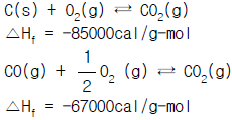
- 18.9 kcal/g-㏖
- -18.0 kcal/g-㏖
- 152.0 kcal/g-㏖
- -152.0 kcal/g-㏖
(정답률: 알수없음)
40. 이상기체에 대한 열역학적 특성 함수식이 아닌 것은?
- PV=RT
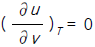
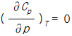
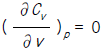
(정답률: 알수없음)
3과목: 단위조작
41. 건조 조작에서 재료의 임계(crtical)함수율이란?
- 건조속도 0 일 때 함수율
- 감율 건조가 끝나는 때의 함수율
- 항율 단계에서 감율 단계로 바뀌는 함수율
- 건조 조작이 끝나는 함수율
(정답률: 알수없음)
42. 증발관의 열원으로 수증기를 이용하는 이유로 적당치 않은 것은?
- 다중 효용 증발을 할 수 있다.
- 폐증기를 이용할 수 있다.
- 열 전달 계수가 작다.
- 국부적인 과열의 염려가 없다.
(정답률: 알수없음)
43. 2중관 열교환기에서 12℃의 지하수를 75℃까지 가열하기 위해서 100℃의 폐수증기(λ = 539㎉/㎏)를 50㎏/hr로 열 교환기에 보내면 75℃의 물은 얼마를 얻을 수 있겠는가? (단, 가열 폐수수증기는 40℃로 냉각되어 나온다.)
- 276.3㎏/hr
- 356.5㎏/hr
- 475.4㎏/hr
- 627.6㎏/hr
(정답률: 알수없음)
44. 초미분쇄기(ultrafine grinder)인 유체-에너지 밀(mill)의 기본 원리는?
- 절단
- 압축
- 충격
- 마멸
(정답률: 알수없음)
45. 환류가 있는 증류탑에서 전환류(total - Reflux)의 조건하에서 일어날 수 없는 것은 어느 것인가?
- 탑위 제품의 유출이 없다.
- 탑밑 제품의 유출이 없다.
- 증류탑의 탑경이 가장 최소이다.
- 최소의 이상단을 갖는다.
(정답률: 알수없음)
46. 관 직경(D), 유체의밀도(ρ ), 정압비열(Cp), 점도(μ ), 질량속도(G), 열전도도(k), 열전달계수를(h)라 할 때 무차원이 되지 않는 것은?
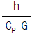
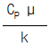
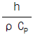
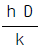
(정답률: 알수없음)
47. 열전달에서 사용되는 무차원수 중에서 자연대류 열전달에 사용되는 무차원 수는?
- Nsh(셔우드수)
- Nsc(슈미트수)
- NRe(레이놀즈수)
- NGr(그라쇼프수)
(정답률: 알수없음)
48. 다공질매체에서의 액체의 흐름에 대해 이용되는 Darcy 법칙을 가장 잘 나타낸 것은?
- 유량은 압력강하와 유체점도에 비례한다.
- 유량은 압력강하에 반비례하고 유체점도에 비례한다.
- 유량은 압력강하에 비례하고 유체점도에 반비례한다.
- 유량은 압력강하와 유체점도에 반비례한다.
(정답률: 알수없음)
49. Hagen - Poiseuille equation 이 성립하기 위한 유체의 흐름에 대한 조건이 아닌 것은?
- 완전 발달 흐름(fully developed flow)이어야 한다.
- 비압축성 유체이어야 한다.
- 수평관을 통하여 흐르는 유체에 대한 식이다.
- 층류 또는 난류에 관계 없이 뉴톤유체(Newtonian fluid)에 적용되는 식이다.
(정답률: 알수없음)
50. 탑에는 정류부 및 탈거부에 관한 2개의 조작선이 있는데, 조작선의 기울기의 크기를 옳게 나타낸 것은?
- 정류부와 탈거부는 항상 1보다 크다.
- 정류부와 탈거부는 항상 1보다 작다.
- 정류부는 항상 1보다 크고, 탈거부는 항상 1보다 작다.
- 정류부는 항상 1보다 작고, 탈거부는 항상 1보다 크다.
(정답률: 0%)
51. 404K의 스팀이 내경 2.09㎝, 외경 2.67㎝의 관내를 흐른다. 내부 및 외부의 열전달 계수가 각각 5,680W/m2· K 22.7W /m2· K일 경우 관길이 1m 당의 열전달 속도는? (단, 관의 열전도도는 42.9W/mㆍK이며, 관 외부온도는 294K이다.)
- 208W
- 21W
- 2080W
- 0.2W
(정답률: 알수없음)
52. 기체흡수탑에서 경막은 어떤 곳에서는 두꺼워지고 어떤 곳에서는 얇아져서 액체가 작은 물줄기로 모여 국지경로를 따라 충전물을 통해 흐르는 것을 편류(channeling)라 하는데, 다음 중 보통 크기의 탑에서 편류를 최소화하는 방법은?
- 탑 지름을 충전물 지름의 4배 이하로 한다.
- 탑 지름을 충전물 지름의 5배가 되게 한다.
- 탑 지름을 충전물 지름의 6 ∼ 7배가 되게 한다.
- 탑 지름을 충전물 지름의 8배 이상으로 한다.
(정답률: 알수없음)
53. 온도에 민감하여 증발하는 동안 손상되기 쉬운 의약품을 농축하는 방법으로 적당한 것은?
- 가열시간을 증가시킨다.
- 증기공간의 절대압력을 낮춘다.
- 가열온도를 높인다.
- 열전도도가 높은 재질을 쓴다.
(정답률: 알수없음)
54. 충전탑의 높이 설계시 이용되는 것으로 거리가 먼 것은?
- McCabe-Thiele법
- 평형선과 조작선
- 용량계수
- 이론단의 상당높이
(정답률: 알수없음)
55. 정류탑에서 증기유량(V), 탑상제품유량(D) 및 환류액의 질량유량(L) 인 경우 환류비에 대해 잘못 표현된 식은?
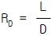
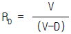
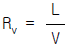
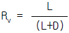
(정답률: 알수없음)
56. 흑체간의 복사열전달은 다음 식으로 표현될 수 있다.
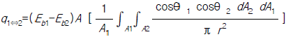
여기서 괄호( [ ] )안의 항을 시각인자(view factor)라 부르는데 이에 대한 설명으로 틀린 것은?- 시각인자는 온도에 무관하며 전적으로 기하학적이다.
- 상호작용관계인 A1F12 = A2F21 이 항상 성립한다.
- 막힌 공간에 대해서 F11 + F12 + F13 + · · · < 1 이다.
- 시각인자 F12 는 흑체 A1 을 떠나는 복사량과 흑체 A2에 도달하는 양의 비로서 정의되며, 1.0을 넘을 수 없다.
(정답률: 알수없음)
57. 전이길이(Transition length)에 대한 가장 옳은 설명은?
- 층류와 난류 사이의 거리를 말한다.
- 파이프의 입구에서부터 완전발달 흐름이 될 때까지의 거리를 말한다.
- 층류로 흐르던 유체가 전이흐름 상태에 도달하기까지 걸리는 거리를 말한다.
- 유체의 흐름에 상관없이 전단응력이 작용하지 않는 지점까지의 거리이다.
(정답률: 알수없음)
58. 평면 판에서 유동 경계층(hydrodynamic boundary layer)과 열 경계층 (thermal boundary layer) 이 같아질 때 프란틀수(prandtl No.) 는 어떤 값을 취하는가?
- 100
- ∞
- 0
- 1
(정답률: 10%)
59. 병류다단추출에서 20kg의 아세트알데히드와 10kg의 아세톤으로 이루어진 용액을 20℃의 물 80kg으로 추출한다. 이 온도에서 추출액과 추잔액의 평형관계는 y=2.3x이다. 1회 추출에서 얻어지는 아세트알데히드의 양은?
- 19.24kg
- 18.97kg
- 17.78kg
- 16.44kg
(정답률: 알수없음)
60. 다음 중 층류(laminar flow)와 관계가 먼 것은?(단, Lt= 전이길이, Re= 레이놀즈수, D = 관경, h= 열전달계수, K = 열전도도, Pr = 프랜틀수,
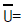
유속)- Lt = 0.⑤Re(D)
- hD/k = 0.023(Re)0.8(Pr)0.4
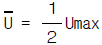
- Re = 2100 이하
(정답률: 알수없음)
4과목: 반응공학
61. 체적이 일정한 회분식반응기에서 기체반응이 일어날 때 화학반응속도식은?
- -ri = (P/RT)dPi/dt
- ri = (1/RT)dPi/dt
- -ri = (P/RT)dCi/dt
- ri = (P/RT)dCi/dt
(정답률: 알수없음)
62. 화학 반응의 온도의존성을 설명하는 이론 중 관계가 없는 것은?
- 아레니우스(Arrhenius)법칙
- 전이상태이론
- 분자 충돌 이론
- 볼츠만(Boltzmann)법칙
(정답률: 알수없음)
63. 균일계 비가역 1차 직열반응,
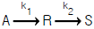
이 회분식반응기에서 일어날 때, 반응시간에 따르는 A의 농도 변화를 바르게 나타낸 식은?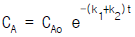
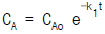
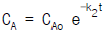
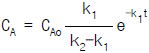
(정답률: 알수없음)
64. 직열반응 A → R → S 의 각 단계에서 반응속도 정수가같으면 혼합류 반응기내의 각 물질의 농도는 반응시간에 따라서 다음 중 어느 그래프처럼 변화 하는가?
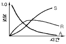
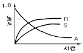
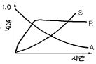
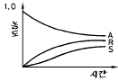
(정답률: 알수없음)
65. 1차 비가역 반응을 시키기 위해 관형반응기를 사용했을 때 공간속도가 3000/hr 이었으며, 이 때 전화율은 40% 이었다. 만일 전화율이 80% 로 되었다면 공간속도는 얼마겠는가?
- 752/hr
- 852/hr
- 952/hr
- 1⑤2/hr
(정답률: 알수없음)
66. n차 반응에 대한 반응속도 상수 k의 차원은?
- (시간)-n(농도)-1
- (시간)-1(농도)-n
- (시간)-1(농도)1-n
- (시간)1-n(농도)-1
(정답률: 알수없음)
67. 반응물 A가 다음의 평행 반응으로 혼합 흐름 반응기에서 반응한다.
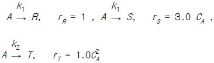
이 반응에서 순간적인 수득분율의 최대값은 얼마인가? (이 때, S는 목적하는 생성물, R과 T는 목적하지 않는 생성물이다.)- 0.5
- 0.6
- 0.7
- 0.8
(정답률: 알수없음)
68. 혼합흐름 반응기와 플러그 흐름 반응기에서 단일 반응으로 나타낼 때 다음 설명 중 틀린 것은?
- 반응 속도식이 증가할 경우 혼합흐름 반응기와 플러그 흐름반응기의 크기는 같게 한다.
- 반응중의 밀도 변화는 설계에 영향을 준다. 그러나 이는 흐름 유형과 밀접한 관계가 있다.
- 특정한 작업과 양의 반응차수에 대하여 혼합흐름 반응기의 크기는 항상 플러그 흐름 반응기 보다 크다.
- 전화율이 클 때는 부피비가 급격히 증가함으로 큰 범위의 전화율인 경우 흐름 유형과 밀접한 관계가 있다
(정답률: 알수없음)
69. 그림과 같이 관형 반응기들이 연결되어 작동하고 있을 때 동일한 전화율을 얻기 위해서는 두 갈래로 갈리는 원료속도의 비를 어떻게 조절하여야 하는가?
- FD : FE = 3 : 1
- FD : FE = 1.5 : 1
- FD : FE = 2 : 1
- FD : FE = 4 : 1
(정답률: 알수없음)
70. 반응속도식이 1차 반응인 반응물 A를 공간시간(space time)이 같은 다음 여러 반응기에서 반응을 진행시킬 때 가장 유리한 반응기는 어느 것인가?
- 이상 혼합 반응기(ideal mixed flow reactor)
- 이상 관형 반응기(plug flow reactor)
- 이상 관형 반응기와 이상 혼합 반응기의 직렬 연결
- 전화율에 따라 다르다.
(정답률: 알수없음)
71. 일반적으로 가스 - 가스 반응을 뜻 할 때 옳은 것은?
- 균일계 반응과 불균일계 반응의 중간 반응
- 균일계 반응
- 불균일계 반응
- 균일계 반응과 불균일계 반응의 혼합
(정답률: 알수없음)
72. 어떤 액상 비가역 1차 반응에서 1000sec 동안에 반응물의 반이 분해되었다. 반응물이 처음 농도의 1/10 이 될 때까지의 시간은?
- 33초
- 1600초
- 3340초
- 340초
(정답률: 알수없음)
73. 연속반응 에서 무차원농도(CR/CA0)를 무차원반응속도상수(dimensionless reaction rate group, k1t)나 전화율(XA)의 함수로 도시(plot)할 때 매개변수(parameter)는?
- k1k2
- k2/k1
- k1/(k2 - k1)
- k2/(k1 + k2)
(정답률: 알수없음)
74. A → C 의 촉매반응이 아래와 같은 단계로 이루어 진다. 탈착반응이 율속단계일 때 Langmuir Hinshelwood모델의 반응속도식으로 맞는 것은? (A:반응물, S:활성점, A.S :흡착 중간체를 뜻한다.)
(정답률: 알수없음)
75. 다음은 촉매 반응에 있어서 기공(pore)의 저항이 반응속도에 미치는 정도를 표시한 것이다. 기공저항을 무시해도 좋다고 표시된 항은? (단, L은 촉매의 길이, De 유효 확산 계수, CA는 농도이다)
(정답률: 알수없음)
76. 가역적 원소반응 A + B R + S 에서 +γ R = k1CACB 이고 -rR = K2CRCS 라면 이 반응의 평형정수 KC 는 어느 것인가?
- k2/k1
- k1/k2
- 1/k1k2
- k1k2
(정답률: 알수없음)
77. 액상 반응을 연구하기 위해 다음과 같이 CSTR 반응기를 연결하였다. 이 반응의 반응 차수는?
- 1
- 1.5
- 2
- 2.5
(정답률: 알수없음)
78. 다음 그림은 기초가역 평행반응(Elementary reversible )parallel reaction)의 농도 대 시간 관계의 도시이다. 옳게 나타낸 것은?
(정답률: 알수없음)
79. 체적이 일정한 회분식 반응기에서 1차 가역반응 A R 이 순수 A로부터 출발하여 진행된다. 평형에 도달했을때 A의 분해율이 85%이면 이 반응의 평형상수 Kc는 얼마인가?(단, A의 초기농도는 0.1㏖/ℓ 였다.)
- 0.57
- 5.67
- 1.76
- 0.18
(정답률: 알수없음)
80. 적당한 조건하에서 A를 다음과 같이 분해한다. 인 농도로 원료 A가 1000ℓ/hr로 보내질 때 R의 수율을 최대로 하기 위하여 혼합 반응기의 용적은 얼마로 하여야 하는가?
- 215.6ℓ
- 166.6ℓ
- 146.6ℓ
- 122.5ℓ
(정답률: 알수없음)
5과목: 공정제어
81. 다음 중에서 싸인 응답(Sinusoidal Response)이 위상인도(Phase lead)를 나타낸 것은?
- P 제어기
- PI 제어기
- PD 제어기
- 수송 래그(Transportation lag)
(정답률: 알수없음)
82. 라플라스 함수 로 표현되는 함수는 시간이 충분히 흐르면 어떤 응답을 보이는가?
- 진동없이 매끄럽게 수렴한다.
- 진동하면서 수렴한다.
- 진동없이 매끄럽게 발산한다.
- 진동하면서 발산한다.
(정답률: 알수없음)
83. 다음과 같이 주어지는 Block선도에서 설정점(set point)은 일정하게 유지되어 있는 상태에서 외란 이 시스템에 가해 졌을 경우, 잔류편차(offset)는 얼마가 되는가?
- 0
- 0.2
- 0.5
- 1.0
(정답률: 알수없음)
84. 주파수 응답을 이용하여 선형계의 안정성을 판정하고자 할 때, 안정성을 나타낸 선형계는?
- 주파수를 크게 함에 따라 응답이 빨라져 계가 불안정 해진다.
- 응답의 주파수는 입력의 주파수보다 작아지므로 계가 안정하게 된다.
- 응답의 주파수는 입력의 주파수보다 커지므로 계가 안정하게 된다.
- 응답의 주파수는 입력의 주파수와 같다.
(정답률: 알수없음)
85. 공정제어(Process Control)의 범주에 들지 않는 것은?
- 전력량을 조절하여 가열로의 온도를 원하는 온도로 유지시킨다.
- 폐수처리장의 미생물의 량을 조절함으로써 유출수의 독성을 격감시킨다.
- 증류탑 (Distillation Column)의 탑상농도 (Top Concentration)를 원하는 값으로 유지시키기 위하여 무엇을 조절할 것인가를 결정한다.
- 열효율을 극대화 시키기 위해 열교환기의 배치를 다시한다.
(정답률: 알수없음)
86. 연속적으로 가스가 들어오고 나가는 임시 가스 저장 탱크에서, 압력 변화를 제어하기 위한 목적으로 공정을 모델링 하고자 한다. 저장탱크에 들어오는 가스유량(시간당들어오는 몰(mole)량)을 qi , 나가는 가스유량을 q 라고 나타낼 경우 저장탱크내의 압력변화를 나타내는 모델 식은 어느 것인가? (단, 가스는 이상기체로 가정하며, 저장탱크의 부피는 V, 압력은 P, 이상기체상수는 R로 나타낸다. )
(정답률: 알수없음)
87. 사람이 차를 운전하는 경우 우회전하는 것을 공정제어계와 비교해 볼 때 최종 제어 요소에 해당된다고 볼 수 있는 것은?
- 사람의 눈
- 사람의 머리
- 사람의 손
- 사람의 귀
(정답률: 알수없음)
88. 제어계의 특성방정식의 근(극점)이 양의 실수값을 가질 때, 시스템이 나타내는 특성으로 바르게 기술한 것은?
- 시스템은 안정하며, 응답은 진동하면서 감소한다.
- 시스템은 불안정하며, 응답은 진동하면서 증가한다.
- 시스템은 안정하며, 응답은 기하급수적으로 감소한다.
- 시스템은 불안정하며, 응답은 기하급수적으로 증가한다.
(정답률: 알수없음)
89. 이차시간지연계 를 비례제어기(Proportional (P) Controller)를 사용하여 제어할 때 단위계단형 설정치 변화 (Unit Step Set Change) 에 대해 정상상태의 출력값은 얼마인가?(단, 비례제어기의 이득(gain)은 1.0 이다.)
- 2/3
- 1/3
- 1
- 0
(정답률: 알수없음)
90. 공정의 동적거동 형태 중 역응답(inverse response)이란?
- 양의 단위 입력에 대해 정상상태에서 음의 출력을 보이는 것.
- 입력에 대해 일정시간이 경과한 후 응답이 나올 때
- 입력에 대해 진동응답을 보일 때
- 초기응답이 정상상태 이득부호와 반대로 나올 때
(정답률: 알수없음)
91. 다음 설명 중 맞는 것은?
- 1차계의 경우 주파수 응답에 대한 phase angle은 φ= tan-1(τ ω )이다.
- 2차계에서 ξ < 0.707일 때 (AR)max =
 이다.
이다. - Bode 안정성 판별에서 입력의 주파수 ω 에 대해 open- loop 주파수 응답이 AR > 1,φ < 180° 일때 계는 안정하다.
- 대개의 경우 gain margin이 1.7보다 크고 phase margin은 30° 보다 크게 선택한다.
(정답률: 알수없음)
92. 그림과 같은 단위계단함수의 Laplace 변환은?
- se-ds
(정답률: 알수없음)
93. 제어계에서 에러(error)라 함은? (단, 설정치:set point, 출력치:output, 입력치:input)
- 설정치와 출력치의 차
- 입력치와 출력치의 차
- 입력치와 피드백 측정치의 차
- 설정치와 피드백 측정치의 차
(정답률: 0%)
94. 아래의 그림과 같은 계의 총괄전달 함수는?
(정답률: 알수없음)
95. 공정제어(process control)의 제어량이 아닌 것은?
- 온도
- 물체의 위치
- 수위
- 유량
(정답률: 알수없음)
96. 안정성 판정을 실험하기 위한 계단응답 실험에 대한 설명으로 옳지 않은 것은?
- 물탱크에 들어가는 물의 밸브를 갑자기 더 열어 유량을 증가시킨다.
- 실험 비이커에 반응물을 주사기를 통해 주입한다.
- 증류탑에 들어가는 유체를 가열기를 통과시켜 온도를 더 높인다.
- 연소기에 들어가는 공기량을 정량 압축기의 속도를 높여 더 들어가게 한다.
(정답률: 알수없음)
97. 시간상수 0.1min을 갖는 수은온도계가 수조에 놓여져 있다. 이 때 수조온도가 사인파로 변화함에 있어서 그의 주파수는 10/π cycle/min이었다. 이러한 사인파 입력에 대한 출력 응답(T/(t))는 어떻게 되는가?
(정답률: 알수없음)
98. 에서 단위계단응답이 임계감쇄가 되기 위한 조건은?
- Kc = 1
- Kc = 2
- Kc = 3
- Kc = 4
(정답률: 알수없음)
99. 바람직한 제어 시스템과 가장 거리가 먼 것은?
- 공정출력이 진동을 안하는 것보다는 하는 것이 바람직하다.
- 설정치(set point)변화를 공정출력이 빨리 따라가야 한다.
- 외란(disturbance)에 의한 공정출력의 영향이 최소화 되어야 한다.
- 측정 노이즈(measurement noise)에 강건해야 한다.
(정답률: 알수없음)
100. 그림에서 라프라스 변환은?
(정답률: 알수없음)
6과목: 화학공업개론
101. 아디프산과 헥사메틸렌 디아민을 원료로 하여 제조되는 물질은?
- 나일론 6
- 나일론 66
- 나일론 11
- 나일론 12
(정답률: 알수없음)
102. 다음 분자량 측정방법중 중량평균 분자량이 얻어지는 것은?
- 말단기 정량법
- 삼투압법
- 광산란법
- 비점상승법
(정답률: 알수없음)
103. 아세트알데히드는 법을 이용하여 에틸렌으로부터 얻어질수 있다. 이 때 사용되는 촉매는 무엇인가?
- 제올라이트
- NaOH
- PdCl2
- FeCl3
(정답률: 알수없음)
104. 일정한 압력 하에서 반응이 일어날 때 계의 반응열을 열 역학적 용어로 무엇이라고 하는가?
- 자유에너지
- 엔트로피
- 잠열
- 엔탈피
(정답률: 0%)
1⑤. 석유의 증류나 전화과정에서 포함되는 불순물을 제거하는 방법이 아닌 것은?
- 용제추출
- 스위트닝
- 수소화정제
- 비스브레이킹
(정답률: 알수없음)
106. 다음 물질중 중합 개시제는?
- 아조비스이소부틸니트릴(azobisisobutylnitrile)
- 부틸라우릴프탈레이트(butyl lauryl phthalate)
- 클로로트리플루오르에틸렌(Chlorotrifluoroethylene)
- 디메틸 테레프탈레이트(dimethylterephytalate)
(정답률: 알수없음)
107. 암모니아 합성에 있어서 CO가스의 전화공정에서 아래와 같은 조성의 A,B 두 가스를 사용할 때 A가스 100에 대하여 B가스를 얼마의 비로 혼합하면 암모니아 합성원료로 적합할 수 있는가? (단,CO전화 반응효율은 100%로 가정)
- 147
- 157
- 167
- 177
(정답률: 알수없음)
108. 위 반응에 대한 설명 중 틀린 것은?
- 라디칼 반응이다.
- α -탄소에서 할로겐화가 일어난다.
- 모노할로겐화물은 ClC6H4CH2CH2CH3이다.
- C6H5CCl2CH2CH3와 같은 디할로겐화물이 얻어진다.
(정답률: 알수없음)
109. 격막식 수산화나트륨 전해조에서 양극재료는?
- 흑연
- 철망
- 닉켈
- 다공성 구리
(정답률: 알수없음)
110. 연실법 황산제조 공정에서는 질소 산화물 공급에 HNO3를 사용하기도 한다. 36% HNO3 20kg으로부터 NO 몇 kg을 발생할 수 있는가?
- 3.4
- 3.0
- 2.2
- 1.1
(정답률: 알수없음)
111. 반도체공정 중 감광되지 않은 부분을 선택적으로 제거하는 공정을 무엇이라하는가?
- 에칭
- 조립
- 박막형성
- 리소그래피
(정답률: 알수없음)
112. 초산과 메탄올을 산촉매하에서 반응시키면 에스테르와 물이 생성된다. 물의 산소원자는 어디에서 왔는가?
- 초산의 CO
- 초산의 OH
- 초산의 CO나 OH
- 메탄올의 OH
(정답률: 알수없음)
113. 암모니아 합성은 고온고압하에서 이루어지며 촉매에 가장 적절한 온도를 설정하는 것이 중요하다. 이때의 온도조절 방식이 아닌 것은?
- 뜨거운 가스 혼합식
- 촉매층간 냉각 방식
- 촉매층내 냉각방식
- 열 교환식
(정답률: 알수없음)
114. 다음 중 탄화수소를 원료로하여 수소를 제조하는 방법이 아닌 것은?
- 열개질법
- 접촉개질법
- 부분산화법
- 워터가스법
(정답률: 알수없음)
115. 암모니아 산화반응시 촉매로 가장 많이 쓰이는 것은?
- Pt
- Fe2O3
- Pt - Rh
- Al2O3
(정답률: 알수없음)
116. 다음 중 Friedel - Crafts 반응에 사용하지 않는 것은?
- CH3COCH3
- (CH3CO)2O
- CH3CH = CH2
- CH3CH2Cl
(정답률: 알수없음)
117. 에텔알코올과 브롬화칼륨을 H2SO4 존재하에서 반응시키면 생성되는 주생성물은?
- C2H4Br
- C2H5OBr
- C2H5Br
- C2H5-O-C2H5
(정답률: 알수없음)
118. 합성염산을 제조할 때는 폭발의 위험이 있으므로 주의해야 한다. 다음은 염산합성시 폭발을 방지하는 방법이다. 틀린 설명은?
- 공기와 같은 가스로서 Cl2를 묽게한다.
- 석영괘 자기괘등 반응완화 촉매를 사용한다.
- H2를 과잉으로 넣어 연쇄 반응을 연결시키는 Cl2를 미반응 상태로 남지 않도록 한다.
- 생성된 HCl을 빨리 제거하여 화재를 방지한다.
(정답률: 알수없음)
119. 물 72kg에 HCl 가스 36.5kg을 용해 시켰을 때 이 HCl의 농도는?
- 43.64%
- 33.64%
- 23.64%
- 13.64%
(정답률: 알수없음)
120. 아세틸렌에 어느 것을 작용시키면 염화비닐이 생성되나?
- HCl
- NaCl
- H2SO4
- HOCl
(정답률: 알수없음)